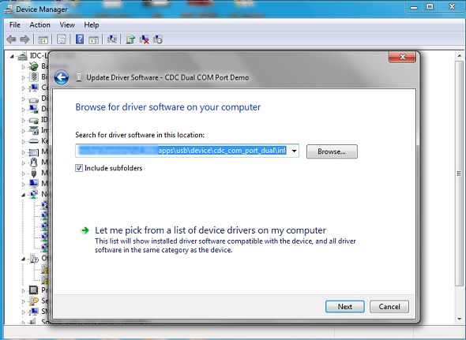

CDC COM Port Dual Example (cdc_com_port_dual)
This application demonstrates the ability of the MPLAB Harmony USB Device Stack to support multiple instances of the same device class. It creates a USB CDC Device that enumerates as two serial ports on the USB Host PC.
Description
This application is example of a USB CDC Device that enumerates as a dual COM port on the USB host PC. The COM port can be opened using any of the terminal applications. To demonstrate communication between the two COM ports, a character typed in one of the COM port is displayed on the other and vice versa.
Downloading and building the application
To clone or download this application from Github, go to the main page of this repository and then click Clone button to clone this repository or download as zip file. This content can also be downloaded using content manager by following these instructions.
Path of the application within the repository is usb_apps_device/apps/cdc_com_port_dual.
Following table gives the details of project configurations, target device used, hardware and its IDE. Open the project using the respective IDE and build it.
| Project Name | IDE | Target Device | Hardware / Configuration |
|---|---|---|---|
| sam_d11_xpro.X | MPLABX | ATSAMD11D14A | SAM D11 Xplained Pro board |
| sam_d21_xpro.X | MPLABX | ATSAMD21J18A | SAM D21 Xplained Pro board |
| sam_e54_xpro.X | MPLABX | ATSAME54P20A | SAM E54 Xplained Pro board |
| sam_e54_xpro_freertos.X | MPLABX | ATSAME54P20A | SAM E54 Xplained Pro board |
| sam_e70_xult.X | MPLABX | ATSAME70Q21B | SAM E70 Xplained Ultra board |
| sam_e70_xult_freertos.X | MPLABX | ATSAME70Q21B | SAM E70 Xplained Ultra board |
| sam_v71_xult.X | MPLABX | ATSAMV71Q21B | SAM V71 Xplained Ultra board |
| sam_v71_xult_freertos.X | MPLABX | ATSAMV71Q21B | SAM V71 Xplained Ultra board |
Configuring the Hardware
SAM D11 Xplained Pro board
- Use TARGET USB connector on the board to connect the USB Device to the USB Host PC.
- LED0 indicates USB Device Configuration Set Complete event (the USB device functionality has been activated by the USB Host).
SAM D21 Xplained Pro board
- Use TARGET USB connector on the board to connect the USB Device to the USB Host PC.
- LED0 indicates USB Device Configuration Set Complete event (the USB device functionality has been activated by the USB Host).
SAM E54 Xplained Pro board
- Use TARGET USB connector on the board to connect the USB Device to the USB Host PC.
- LED0 indicates USB Device Configuration Set Complete event (the USB device functionality has been activated by the USB Host).
SAM E70 Xplained Ultra board
- Jumper J203 must be shorted between PB08 and VBUS (positions 2 and 3).
- Use TARGET USB J200 connector on the board to connect the USB Device to the USB Host PC.
- LED3 indicates USB Device Configuration Set Complete event (the USB device functionality has been activated by the USB Host).
SAM V71 Xplained Ultra board
- Jumper titled “USB VBUS” must be shorted between PC09 and VBUS (positions 2 and 3)
- Use TARGET USB connector on the board to connect the USB Device to the USB Host PC.
- LED0 indicates USB Device Configuration Set Complete event (the USB device functionality has been activated by the USB Host).
Running the Application
This demonstration creates a USB device that enumerates as two serial (COM) ports on the host. Do the following to run this demonstration:
- Open the project with appropriate IDE. Compile the project and program the target device.
-
Attach the device to the host. If the host is a personal computer and this is the first time you have plugged this device into the computer you may be prompted for a .inf file.

-
Select the “Install from a list or specific location (Advanced)” option. Navigate to the driver path available in the repo - ..\usb_apps_device\apps\cdc_com_port_dual\inf.
Note: To specifically select the driver, open the Device Manager and expand the Ports (COM & LPT) tab, and right click on Update Driver Software.

Verify that the enumerated USB device is seen as a virtual USB serial comport in Device Manager.

NOTE: The LEDs on the demonstration board will indicate the USB state of the device. Refer to the Configuring the Hardware section for the selected target hardware.
- Once the device is successfully installed and visible on the Device Manager, open two instances of terminal program, such as HyperTerminal and select the appropriate COM port. Set the serial port settings as follows:
- Baud : 9600
- Data : 8 Bits
- Parity : None
- Stop : 1 Bit
- Flow Control : None
Note: The baud rate can be different from 9600 but the chosen value has to be the same on both the instances of terminal program.
-
To run the demonstration, turn on local echo on both the terminals. If the terminal application is Tera Term, navigate to Setup->Terminal to turn on local echo. Type a character or string in one terminal window. The same character or string shall appear on the second terminal window and vice versa. The following screen shot shows two instances of Tera Term.

Note: Some terminal programs, like HyperTerminal, require users to click the disconnect button before removing the device from the computer. Failing to do so may result in having to close and open the program again to reconnect to the device.